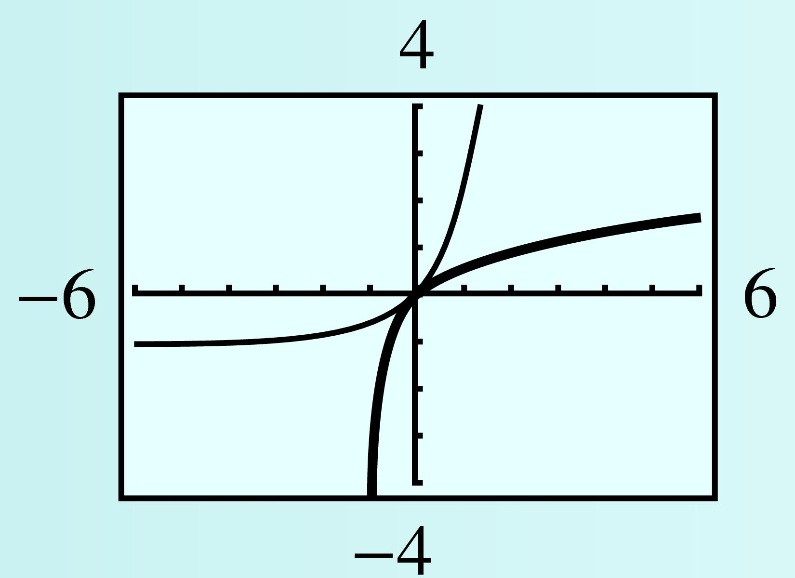

Subsection 3.2 Graphs of Logarithmic Functions
We can obtain a table of values for \(g(x) = \log_2 x\) by making a table for \(f(x) = 2^x\) and then interchanging the columns, as shown in the tables below. You can see that the graphs of \(f(x) = 2^x\) and \(g(x) = \log_2 x\text{,}\) shown in the figre, are symmetric about the line \(y = x\text{.}\)
| \(x\) | \(f(x)=2^x\) |
| \(-2\) | \(\dfrac{1}{4}\) |
| \(-1\) | \(\dfrac{1}{2}\) |
| \(0\) | \(1\) |
| \(1\) | \(2\) |
| \(2\) | \(4\) |
| \(x\) | \(g(x)=\log_{2}{x}\) |
| \(\dfrac{1}{4}\) | \(-2\) |
| \(\dfrac{1}{2}\) | \(-1\) |
| \(1\) | \(0\) |
| \(2\) | \(1\) |
| \(4\) | \(2\) |

Example 3.2.5.
Graph the function \(f(x)=10^x\) and its inverse \(g(x)=\log_{10}{x}\) on the same axes.
We start by making a table of values for the function \(f(x)=10^x\text{.}\) We can make a table of values for the inverse function, \(g(x) = \log_{10}{x}\text{,}\) by interchanging the components of each ordered pair in the table for \(f\text{.}\)
| \(x\) | \(f(x)\) |
| \(-2\) | \(0.01\) |
| \(-1\) | \(0.1\) |
| \(0\) | \(1\) |
| \(1\) | \(10\) |
| \(2\) | \(100\) |
| \(x\) | \(g(x)\) |
| \(0.01\) | \(-2\) |
| \(0.1\) | \(-1\) |
| \(1\) | \(0\) |
| \(10\) | \(1\) |
| \(100\) | \(2\) |

We plot each set of points and connect them with smooth curves to obtain the graphs shown above.
Checkpoint 3.2.6.
Make a table of values and graph the function \(h(x) = \log_4 x\text{.}\)
While an exponential growth function increases very rapidly for positive values, its inverse, the logarithmic function, grows extremely slowly, as you can see in Example 3.2.5. In addition, the logarithmic function \(y = \log_b x\) for any base \(b \gt 0, b \ne 1\text{,}\) has the following properties.
Logarithmic Functions \(y = \log_b x\).
- Domain: all positive real numbers
- Range: all real numbers
- \(x\)-intercept: \((1, 0)\)
- \(y\)-intercept: none
- Vertical asymptote at \(x = 0\)
- The graphs of \(y = \log_b x\) and \(y = b^x\) are symmetric about the line \(y = x\text{.}\)
Example 3.2.7.
- Find the inverse of the function \(f(x) = 2^{x-3} - 4\text{.}\)
- Graph \(f\) and \(f^{-1}\) on the same grid.
- State the domain and range of \(f\) and of \(f^{-1}\text{.}\)
-
We write the function as \(y = 2^{x-3} - 4\text{,}\) and solve for \(x\) in terms of \(y\text{.}\) First, we isolate the power:
\begin{equation*} \begin{aligned}[t] y + 4 \amp= 2^{x-3}\amp\amp \blert{\text{Take logs base 2.}}\\ \log_{2}{(y + 4)} \amp= \log_{2}{2}^{x-3} = x - 3\\ x \amp = 3 + \log_{2}{(y + 4)} \end{aligned} \end{equation*}The inverse function is \(f^{-1}(y) = 3 + \log_{2}{(y + 4)}\text{.}\) However, to graph both \(f\) and \(f^{-1}\) on the same grid, we write the inverse function as \(f^{-1}(x) = 3 + \log_{2}{(x + 4)}\text{.}\)
-
To graph \(f\text{,}\) we translate the graph of \(y = 2^x\) by \(3\) units to the right and \(4\) units down. The graph of \(f^{-1}\) looks like the graph of \(y = \log_2 x\text{,}\) but shifted \(4\) units to the left and \(3\) units up. The graphs are shown below, along with the line \(y = x\text{.}\)

-
The function \(f\) is a translation of an exponential function, and its domain consists of all real numbers. Because the graph is shifted \(4\) units down, the range of \(f\) is \((-4,\infty)\text{.}\) Because the log of a negative number or zero is undefined, for \(f^{-1}(x) = 3 + \log_{2}{(x + 4)}\text{,}\) we must have \(x + 4 \gt 0\text{,}\) or \(x \gt -4\text{.}\) We can verify on the graph that the range of \(f^{-1}\) includes all real numbers. Thus,
\begin{equation*} \begin{aligned}[t] \amp\text{Domain}(f) = \text{all real numbers} = \text{Range}(f^{-1})\\ \amp\text{Range}(f) = (-4,\infty) = \text{Domain} (f^{-1}) \end{aligned} \end{equation*}
Checkpoint 3.2.8.
- Find the inverse function for \(f(x) = 2 \log(x + 1)\text{.}\)
- Graph \(f\) and \(f^{-1}\) in the window\begin{equation*} \begin{aligned}[t] \text{Xmin} \amp = -6 \amp\amp \text{Xmax} = 6\\ \text{Ymin} \amp = -4 \amp\amp \text{Ymax} = 4 \end{aligned} \end{equation*}
- State the domain and range of \(f\) and \(f^{-1}\text{.}\)
\(f^{-1}(x) = 10^{x/2} - 1 \)
- 
Domain of \(f\text{:}\) \((-1,\infty)\text{,}\) Range of \(f\text{:}\) all real numbers, Domain of \(f^{-1}\text{:}\) all real numbers, Range of \(f^{-1}\text{:}\) \((-1, \infty)\)